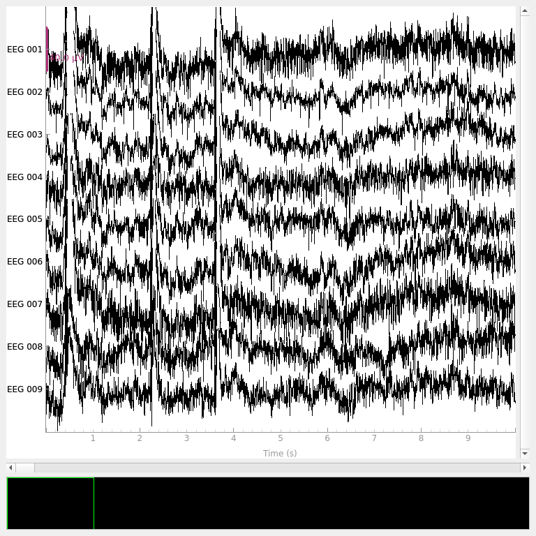
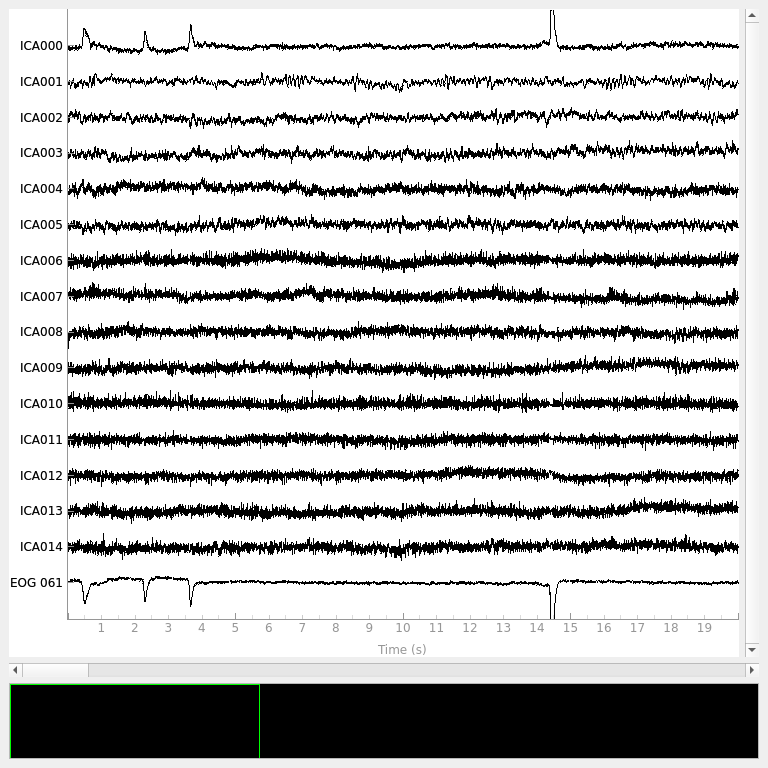
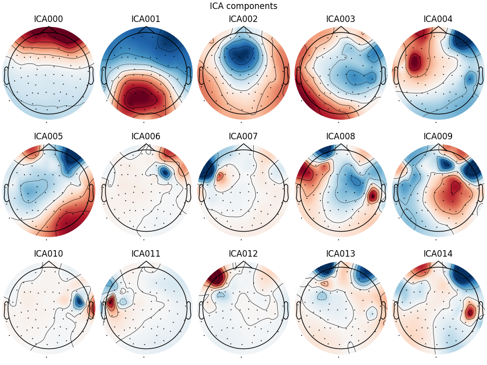
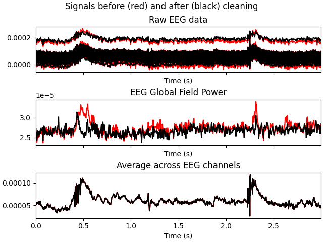
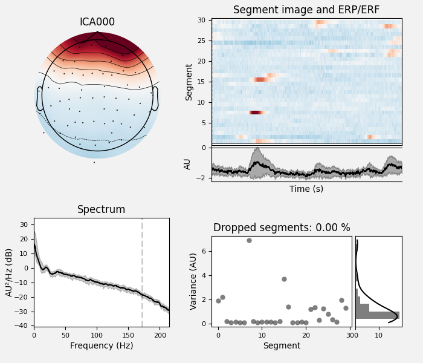
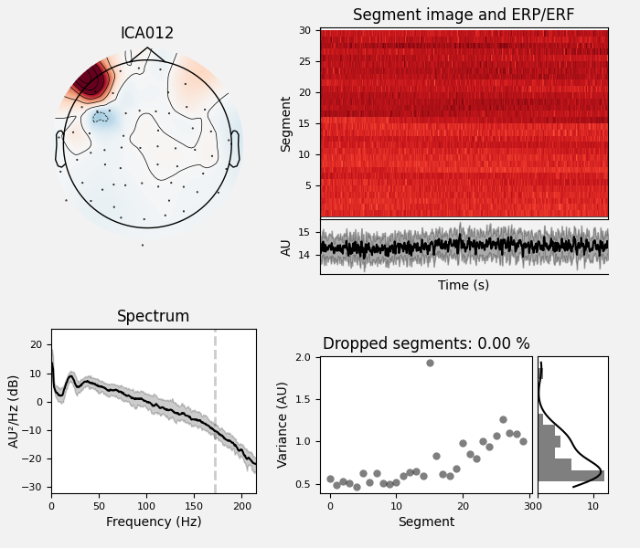
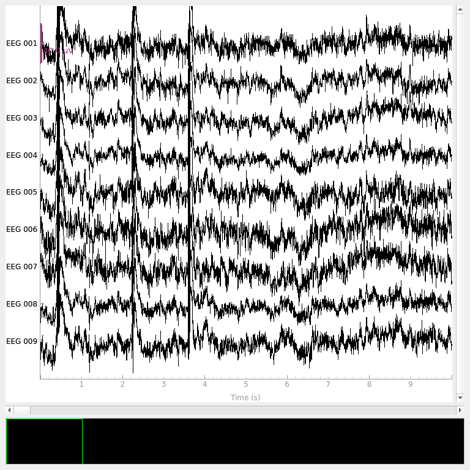

Note
Go to the end to download the full example code
Repairing artifacts with ICA automatically using ICLabel Model#
This tutorial covers automatically repairing signals using ICA with the ICLabel model[1], which originates in EEGLab. For conceptual background on ICA, see this scikit-learn tutorial. For a basic understanding of how to use ICA to remove artifacts, see the tutorial in MNE-Python.
ICLabel is designed to classify ICs fitted with an extended infomax ICA decomposition algorithm on EEG datasets referenced to a common average and filtered between [1., 100.] Hz. It is possible to run ICLabel on datasets that do not meet those specification, but the classification performance might be negatively impacted. Moreover, the ICLabel paper did not study the effects of these preprocessing steps.
Note
This example involves running the ICA Infomax algorithm, which requires scikit-learn to be installed. Please install this optional dependency before running the example.
We begin as always by importing the necessary Python modules and loading some
example data. Because ICA can be computationally
intense, we’ll also crop the data to 60 seconds; and to save ourselves from
repeatedly typing mne.preprocessing we’ll directly import a few functions
and classes from that submodule.
import mne
from mne.preprocessing import ICA
from mne_icalabel import label_components
sample_data_folder = mne.datasets.sample.data_path() / "MEG" / "sample"
sample_data_raw_file = sample_data_folder / "sample_audvis_raw.fif"
raw = mne.io.read_raw_fif(sample_data_raw_file)
# we'll crop to 60 seconds and drop MEG channels
raw.crop(tmax=60.0).pick_types(eeg=True, stim=True, eog=True)
raw.load_data()
Using default location ~/mne_data for sample...
Creating ~/mne_data
0%| | 0.00/1.65G [00:00<?, ?B/s]
0%| | 2.09M/1.65G [00:00<01:18, 20.9MB/s]
0%| | 5.48M/1.65G [00:00<00:57, 28.6MB/s]
1%|▏ | 8.43M/1.65G [00:00<00:57, 28.5MB/s]
1%|▎ | 12.1M/1.65G [00:00<00:51, 31.7MB/s]
1%|▎ | 15.4M/1.65G [00:00<00:51, 31.8MB/s]
1%|▍ | 19.1M/1.65G [00:00<00:48, 33.4MB/s]
1%|▌ | 22.5M/1.65G [00:00<00:50, 32.2MB/s]
2%|▌ | 26.0M/1.65G [00:00<00:49, 33.1MB/s]
2%|▋ | 29.5M/1.65G [00:00<00:48, 33.3MB/s]
2%|▋ | 33.0M/1.65G [00:01<00:48, 33.7MB/s]
2%|▊ | 36.6M/1.65G [00:01<00:48, 33.0MB/s]
2%|▉ | 40.2M/1.65G [00:01<00:47, 34.0MB/s]
3%|▉ | 43.6M/1.65G [00:01<00:48, 33.2MB/s]
3%|█ | 47.3M/1.65G [00:01<00:46, 34.4MB/s]
3%|█▏ | 50.8M/1.65G [00:01<00:48, 33.2MB/s]
3%|█▏ | 54.5M/1.65G [00:01<00:46, 34.4MB/s]
4%|█▎ | 58.0M/1.65G [00:01<00:47, 33.4MB/s]
4%|█▍ | 61.7M/1.65G [00:01<00:45, 34.6MB/s]
4%|█▍ | 65.2M/1.65G [00:01<00:47, 33.3MB/s]
4%|█▌ | 68.9M/1.65G [00:02<00:47, 33.1MB/s]
4%|█▌ | 72.5M/1.65G [00:02<00:46, 33.9MB/s]
5%|█▋ | 76.0M/1.65G [00:02<00:47, 33.2MB/s]
5%|█▊ | 79.6M/1.65G [00:02<00:46, 34.2MB/s]
5%|█▊ | 83.0M/1.65G [00:02<00:47, 33.1MB/s]
5%|█▉ | 86.6M/1.65G [00:02<00:46, 33.7MB/s]
5%|██ | 90.0M/1.65G [00:02<00:46, 33.4MB/s]
6%|██ | 93.6M/1.65G [00:02<00:45, 33.9MB/s]
6%|██▏ | 97.1M/1.65G [00:02<00:46, 33.2MB/s]
6%|██▎ | 101M/1.65G [00:03<00:46, 33.6MB/s]
6%|██▍ | 104M/1.65G [00:03<00:46, 33.6MB/s]
7%|██▍ | 108M/1.65G [00:03<00:44, 34.5MB/s]
7%|██▌ | 111M/1.65G [00:03<00:46, 33.2MB/s]
7%|██▋ | 115M/1.65G [00:03<00:44, 34.2MB/s]
7%|██▋ | 118M/1.65G [00:03<00:45, 33.5MB/s]
7%|██▊ | 122M/1.65G [00:03<00:44, 34.6MB/s]
8%|██▉ | 126M/1.65G [00:03<00:46, 32.6MB/s]
8%|██▉ | 129M/1.65G [00:03<00:44, 34.0MB/s]
8%|███ | 133M/1.65G [00:03<00:44, 33.9MB/s]
8%|███▏ | 136M/1.65G [00:04<00:46, 32.4MB/s]
8%|███▏ | 140M/1.65G [00:04<00:45, 33.5MB/s]
9%|███▎ | 144M/1.65G [00:04<00:44, 34.1MB/s]
9%|███▍ | 147M/1.65G [00:04<00:43, 34.9MB/s]
9%|███▍ | 151M/1.65G [00:04<00:46, 32.6MB/s]
9%|███▌ | 155M/1.65G [00:04<00:43, 34.1MB/s]
10%|███▋ | 158M/1.65G [00:04<00:43, 34.3MB/s]
10%|███▋ | 162M/1.65G [00:04<00:42, 35.0MB/s]
10%|███▊ | 165M/1.65G [00:04<00:45, 32.7MB/s]
10%|███▉ | 169M/1.65G [00:05<00:44, 33.6MB/s]
10%|███▉ | 173M/1.65G [00:05<00:42, 34.5MB/s]
11%|████ | 176M/1.65G [00:05<00:45, 32.3MB/s]
11%|████▏ | 180M/1.65G [00:05<00:44, 33.4MB/s]
11%|████▏ | 183M/1.65G [00:05<00:45, 32.3MB/s]
11%|████▎ | 186M/1.65G [00:05<00:52, 27.7MB/s]
11%|████▎ | 190M/1.65G [00:05<00:52, 27.8MB/s]
12%|████▍ | 194M/1.65G [00:05<00:48, 30.0MB/s]
12%|████▌ | 197M/1.65G [00:05<00:45, 31.9MB/s]
12%|████▋ | 201M/1.65G [00:06<00:42, 33.8MB/s]
12%|████▋ | 205M/1.65G [00:06<00:46, 31.3MB/s]
13%|████▊ | 208M/1.65G [00:06<00:43, 33.1MB/s]
13%|████▉ | 212M/1.65G [00:06<00:42, 33.9MB/s]
13%|████▉ | 215M/1.65G [00:06<00:45, 31.5MB/s]
13%|█████ | 219M/1.65G [00:06<00:43, 33.0MB/s]
13%|█████ | 223M/1.65G [00:06<00:41, 34.2MB/s]
14%|█████▏ | 227M/1.65G [00:06<00:44, 32.1MB/s]
14%|█████▎ | 230M/1.65G [00:06<00:42, 33.3MB/s]
14%|█████▎ | 234M/1.65G [00:07<00:42, 33.1MB/s]
14%|█████▍ | 238M/1.65G [00:07<00:43, 32.8MB/s]
15%|█████▌ | 241M/1.65G [00:07<00:41, 33.9MB/s]
15%|█████▋ | 245M/1.65G [00:07<00:40, 34.9MB/s]
15%|█████▋ | 249M/1.65G [00:07<00:39, 35.8MB/s]
15%|█████▊ | 253M/1.65G [00:07<00:42, 32.8MB/s]
16%|█████▉ | 256M/1.65G [00:07<00:41, 34.0MB/s]
16%|█████▉ | 260M/1.65G [00:07<00:39, 35.1MB/s]
16%|██████ | 264M/1.65G [00:07<00:42, 32.3MB/s]
16%|██████▏ | 267M/1.65G [00:08<00:41, 33.7MB/s]
16%|██████▏ | 271M/1.65G [00:08<00:39, 34.7MB/s]
17%|██████▎ | 275M/1.65G [00:08<00:42, 32.2MB/s]
17%|██████▍ | 278M/1.65G [00:08<00:41, 33.5MB/s]
17%|██████▍ | 282M/1.65G [00:08<00:39, 34.7MB/s]
17%|██████▌ | 286M/1.65G [00:08<00:42, 32.2MB/s]
18%|██████▋ | 289M/1.65G [00:08<00:40, 33.3MB/s]
18%|██████▋ | 293M/1.65G [00:08<00:39, 34.6MB/s]
18%|██████▊ | 297M/1.65G [00:08<00:38, 35.6MB/s]
18%|██████▉ | 300M/1.65G [00:09<00:41, 32.7MB/s]
18%|██████▉ | 304M/1.65G [00:09<00:39, 33.8MB/s]
19%|███████ | 308M/1.65G [00:09<00:38, 35.1MB/s]
19%|███████▏ | 312M/1.65G [00:09<00:41, 32.4MB/s]
19%|███████▏ | 315M/1.65G [00:09<00:39, 33.6MB/s]
19%|███████▎ | 319M/1.65G [00:09<00:39, 34.0MB/s]
19%|███████▍ | 322M/1.65G [00:09<00:41, 32.2MB/s]
20%|███████▍ | 326M/1.65G [00:09<00:39, 33.5MB/s]
20%|███████▌ | 329M/1.65G [00:09<00:39, 33.8MB/s]
20%|███████▋ | 333M/1.65G [00:10<00:38, 34.6MB/s]
20%|███████▋ | 337M/1.65G [00:10<00:40, 32.5MB/s]
21%|███████▊ | 340M/1.65G [00:10<00:38, 33.9MB/s]
21%|███████▉ | 344M/1.65G [00:10<00:38, 34.1MB/s]
21%|███████▉ | 348M/1.65G [00:10<00:37, 35.2MB/s]
21%|████████ | 351M/1.65G [00:10<00:39, 32.7MB/s]
21%|████████▏ | 355M/1.65G [00:10<00:38, 33.5MB/s]
22%|████████▏ | 358M/1.65G [00:10<00:37, 34.2MB/s]
22%|████████▎ | 362M/1.65G [00:10<00:39, 32.3MB/s]
22%|████████▍ | 365M/1.65G [00:10<00:38, 33.7MB/s]
22%|████████▍ | 369M/1.65G [00:11<00:37, 34.0MB/s]
23%|████████▌ | 373M/1.65G [00:11<00:36, 34.7MB/s]
23%|████████▋ | 376M/1.65G [00:11<00:39, 32.5MB/s]
23%|████████▋ | 380M/1.65G [00:11<00:37, 34.0MB/s]
23%|████████▊ | 383M/1.65G [00:11<00:37, 34.2MB/s]
23%|████████▉ | 387M/1.65G [00:11<00:38, 32.5MB/s]
24%|████████▉ | 391M/1.65G [00:11<00:37, 33.6MB/s]
24%|█████████ | 394M/1.65G [00:11<00:36, 34.0MB/s]
24%|█████████▏ | 398M/1.65G [00:11<00:35, 35.0MB/s]
24%|█████████▏ | 401M/1.65G [00:12<00:38, 32.7MB/s]
25%|█████████▎ | 405M/1.65G [00:12<00:36, 33.7MB/s]
25%|█████████▍ | 409M/1.65G [00:12<00:35, 34.6MB/s]
25%|█████████▍ | 412M/1.65G [00:12<00:38, 32.4MB/s]
25%|█████████▌ | 416M/1.65G [00:12<00:36, 33.7MB/s]
25%|█████████▋ | 420M/1.65G [00:12<00:36, 34.0MB/s]
26%|█████████▋ | 423M/1.65G [00:12<00:35, 34.3MB/s]
26%|█████████▊ | 426M/1.65G [00:12<00:37, 32.5MB/s]
26%|█████████▉ | 430M/1.65G [00:12<00:35, 34.0MB/s]
26%|█████████▉ | 434M/1.65G [00:13<00:35, 34.1MB/s]
26%|██████████ | 437M/1.65G [00:13<00:34, 35.1MB/s]
27%|██████████▏ | 441M/1.65G [00:13<00:37, 32.7MB/s]
27%|██████████▏ | 444M/1.65G [00:13<00:36, 33.5MB/s]
27%|██████████▎ | 448M/1.65G [00:13<00:34, 34.5MB/s]
27%|██████████▍ | 452M/1.65G [00:13<00:37, 32.4MB/s]
28%|██████████▍ | 455M/1.65G [00:13<00:35, 33.7MB/s]
28%|██████████▌ | 459M/1.65G [00:13<00:36, 33.1MB/s]
28%|██████████▋ | 462M/1.65G [00:13<00:40, 29.2MB/s]
28%|██████████▋ | 465M/1.65G [00:14<00:41, 28.9MB/s]
28%|██████████▊ | 468M/1.65G [00:14<00:41, 28.3MB/s]
29%|██████████▊ | 472M/1.65G [00:14<00:39, 30.2MB/s]
29%|██████████▉ | 476M/1.65G [00:14<00:36, 32.2MB/s]
29%|███████████ | 479M/1.65G [00:14<00:34, 33.6MB/s]
29%|███████████ | 483M/1.65G [00:14<00:37, 31.3MB/s]
29%|███████████▏ | 486M/1.65G [00:14<00:35, 32.8MB/s]
30%|███████████▎ | 490M/1.65G [00:14<00:34, 34.1MB/s]
30%|███████████▎ | 494M/1.65G [00:14<00:36, 32.0MB/s]
30%|███████████▍ | 497M/1.65G [00:14<00:34, 33.6MB/s]
30%|███████████▌ | 501M/1.65G [00:15<00:32, 35.1MB/s]
31%|███████████▌ | 505M/1.65G [00:15<00:35, 32.2MB/s]
31%|███████████▋ | 509M/1.65G [00:15<00:33, 33.7MB/s]
31%|███████████▊ | 513M/1.65G [00:15<00:32, 35.0MB/s]
31%|███████████▊ | 516M/1.65G [00:15<00:35, 32.2MB/s]
31%|███████████▉ | 520M/1.65G [00:15<00:33, 33.7MB/s]
32%|████████████ | 524M/1.65G [00:15<00:32, 35.1MB/s]
32%|████████████ | 527M/1.65G [00:15<00:34, 32.2MB/s]
32%|████████████▏ | 531M/1.65G [00:15<00:33, 33.7MB/s]
32%|████████████▎ | 535M/1.65G [00:16<00:31, 35.1MB/s]
33%|████████████▍ | 539M/1.65G [00:16<00:34, 32.1MB/s]
33%|████████████▍ | 542M/1.65G [00:16<00:32, 33.8MB/s]
33%|████████████▌ | 546M/1.65G [00:16<00:31, 35.0MB/s]
33%|████████████▋ | 550M/1.65G [00:16<00:34, 32.2MB/s]
33%|████████████▋ | 554M/1.65G [00:16<00:32, 33.7MB/s]
34%|████████████▊ | 557M/1.65G [00:16<00:31, 35.0MB/s]
34%|████████████▉ | 561M/1.65G [00:16<00:33, 32.2MB/s]
34%|████████████▉ | 565M/1.65G [00:16<00:32, 33.8MB/s]
34%|█████████████ | 569M/1.65G [00:17<00:30, 35.0MB/s]
35%|█████████████▏ | 572M/1.65G [00:17<00:33, 32.3MB/s]
35%|█████████████▏ | 576M/1.65G [00:17<00:31, 33.8MB/s]
35%|█████████████▎ | 580M/1.65G [00:17<00:30, 35.1MB/s]
35%|█████████████▍ | 584M/1.65G [00:17<00:33, 32.3MB/s]
36%|█████████████▌ | 587M/1.65G [00:17<00:31, 33.8MB/s]
36%|█████████████▌ | 591M/1.65G [00:17<00:30, 35.0MB/s]
36%|█████████████▋ | 595M/1.65G [00:17<00:32, 32.3MB/s]
36%|█████████████▊ | 598M/1.65G [00:17<00:31, 33.5MB/s]
36%|█████████████▊ | 602M/1.65G [00:18<00:29, 35.1MB/s]
37%|█████████████▉ | 606M/1.65G [00:18<00:32, 32.4MB/s]
37%|██████████████ | 610M/1.65G [00:18<00:30, 33.9MB/s]
37%|██████████████ | 614M/1.65G [00:18<00:29, 35.1MB/s]
37%|██████████████▏ | 617M/1.65G [00:18<00:32, 32.2MB/s]
38%|██████████████▎ | 621M/1.65G [00:18<00:30, 34.0MB/s]
38%|██████████████▎ | 625M/1.65G [00:18<00:29, 35.1MB/s]
38%|██████████████▍ | 629M/1.65G [00:18<00:31, 32.2MB/s]
38%|██████████████▌ | 632M/1.65G [00:19<00:30, 33.9MB/s]
38%|██████████████▋ | 636M/1.65G [00:19<00:28, 35.1MB/s]
39%|██████████████▋ | 640M/1.65G [00:19<00:31, 32.2MB/s]
39%|██████████████▊ | 644M/1.65G [00:19<00:29, 33.8MB/s]
39%|██████████████▉ | 647M/1.65G [00:19<00:28, 35.1MB/s]
39%|██████████████▉ | 651M/1.65G [00:19<00:31, 32.2MB/s]
40%|███████████████ | 655M/1.65G [00:19<00:29, 33.8MB/s]
40%|███████████████▏ | 659M/1.65G [00:19<00:28, 34.9MB/s]
40%|███████████████▏ | 662M/1.65G [00:19<00:30, 32.4MB/s]
40%|███████████████▎ | 666M/1.65G [00:20<00:29, 33.8MB/s]
41%|███████████████▍ | 670M/1.65G [00:20<00:28, 35.1MB/s]
41%|███████████████▍ | 674M/1.65G [00:20<00:30, 32.3MB/s]
41%|███████████████▌ | 677M/1.65G [00:20<00:28, 33.9MB/s]
41%|███████████████▋ | 681M/1.65G [00:20<00:27, 35.0MB/s]
41%|███████████████▋ | 685M/1.65G [00:20<00:29, 32.3MB/s]
42%|███████████████▊ | 689M/1.65G [00:20<00:28, 33.8MB/s]
42%|███████████████▉ | 692M/1.65G [00:20<00:27, 35.1MB/s]
42%|████████████████ | 696M/1.65G [00:20<00:29, 32.3MB/s]
42%|████████████████ | 700M/1.65G [00:21<00:28, 33.8MB/s]
43%|████████████████▏ | 704M/1.65G [00:21<00:26, 35.2MB/s]
43%|████████████████▎ | 707M/1.65G [00:21<00:29, 32.3MB/s]
43%|████████████████▎ | 711M/1.65G [00:21<00:27, 33.9MB/s]
43%|████████████████▍ | 715M/1.65G [00:21<00:26, 35.0MB/s]
43%|████████████████▌ | 719M/1.65G [00:21<00:28, 32.3MB/s]
44%|████████████████▌ | 722M/1.65G [00:21<00:28, 33.0MB/s]
44%|████████████████▋ | 726M/1.65G [00:21<00:27, 33.5MB/s]
44%|████████████████▊ | 729M/1.65G [00:21<00:26, 34.7MB/s]
44%|████████████████▊ | 733M/1.65G [00:21<00:27, 32.9MB/s]
45%|████████████████▉ | 737M/1.65G [00:22<00:26, 34.5MB/s]
45%|█████████████████ | 740M/1.65G [00:22<00:26, 34.0MB/s]
45%|█████████████████ | 744M/1.65G [00:22<00:27, 32.6MB/s]
45%|█████████████████▏ | 748M/1.65G [00:22<00:26, 33.8MB/s]
45%|█████████████████▎ | 751M/1.65G [00:22<00:26, 33.6MB/s]
46%|█████████████████▎ | 755M/1.65G [00:22<00:25, 34.9MB/s]
46%|█████████████████▍ | 758M/1.65G [00:22<00:27, 32.9MB/s]
46%|█████████████████▌ | 762M/1.65G [00:22<00:25, 34.5MB/s]
46%|█████████████████▌ | 766M/1.65G [00:22<00:26, 33.7MB/s]
47%|█████████████████▋ | 769M/1.65G [00:23<00:27, 32.5MB/s]
47%|█████████████████▊ | 773M/1.65G [00:23<00:25, 34.0MB/s]
47%|█████████████████▊ | 776M/1.65G [00:23<00:26, 33.6MB/s]
47%|█████████████████▉ | 780M/1.65G [00:23<00:25, 34.8MB/s]
47%|██████████████████ | 784M/1.65G [00:23<00:26, 32.6MB/s]
48%|██████████████████ | 787M/1.65G [00:23<00:25, 33.3MB/s]
48%|██████████████████▏ | 791M/1.65G [00:23<00:25, 34.4MB/s]
48%|██████████████████▎ | 795M/1.65G [00:23<00:26, 32.9MB/s]
48%|██████████████████▎ | 798M/1.65G [00:23<00:25, 33.6MB/s]
48%|██████████████████▍ | 802M/1.65G [00:24<00:25, 33.5MB/s]
49%|██████████████████▌ | 805M/1.65G [00:24<00:24, 34.9MB/s]
49%|██████████████████▌ | 809M/1.65G [00:24<00:25, 33.1MB/s]
49%|██████████████████▋ | 813M/1.65G [00:24<00:24, 34.6MB/s]
49%|██████████████████▊ | 816M/1.65G [00:24<00:24, 33.9MB/s]
50%|██████████████████▊ | 820M/1.65G [00:24<00:25, 32.6MB/s]
50%|██████████████████▉ | 824M/1.65G [00:24<00:24, 34.0MB/s]
50%|███████████████████ | 827M/1.65G [00:24<00:24, 33.5MB/s]
50%|███████████████████ | 831M/1.65G [00:24<00:23, 34.8MB/s]
50%|███████████████████▏ | 834M/1.65G [00:25<00:24, 33.0MB/s]
51%|███████████████████▎ | 838M/1.65G [00:25<00:24, 33.3MB/s]
51%|███████████████████▎ | 842M/1.65G [00:25<00:23, 34.6MB/s]
51%|███████████████████▍ | 845M/1.65G [00:25<00:24, 32.9MB/s]
51%|███████████████████▌ | 849M/1.65G [00:25<00:23, 34.4MB/s]
52%|███████████████████▌ | 853M/1.65G [00:25<00:23, 33.8MB/s]
52%|███████████████████▋ | 856M/1.65G [00:25<00:24, 32.6MB/s]
52%|███████████████████▊ | 860M/1.65G [00:25<00:23, 34.1MB/s]
52%|███████████████████▊ | 864M/1.65G [00:25<00:23, 33.6MB/s]
52%|███████████████████▉ | 867M/1.65G [00:25<00:22, 34.9MB/s]
53%|████████████████████ | 871M/1.65G [00:26<00:23, 33.1MB/s]
53%|████████████████████ | 875M/1.65G [00:26<00:23, 33.2MB/s]
53%|████████████████████▏ | 878M/1.65G [00:26<00:22, 34.5MB/s]
53%|████████████████████▎ | 882M/1.65G [00:26<00:23, 32.8MB/s]
54%|████████████████████▎ | 886M/1.65G [00:26<00:22, 34.4MB/s]
54%|████████████████████▍ | 889M/1.65G [00:26<00:25, 30.0MB/s]
54%|████████████████████▌ | 892M/1.65G [00:26<00:26, 28.4MB/s]
54%|████████████████████▌ | 896M/1.65G [00:26<00:24, 30.8MB/s]
54%|████████████████████▋ | 900M/1.65G [00:26<00:23, 32.5MB/s]
55%|████████████████████▊ | 903M/1.65G [00:27<00:24, 30.5MB/s]
55%|████████████████████▊ | 907M/1.65G [00:27<00:22, 32.5MB/s]
55%|████████████████████▉ | 911M/1.65G [00:27<00:21, 34.2MB/s]
55%|█████████████████████ | 914M/1.65G [00:27<00:23, 31.4MB/s]
56%|█████████████████████ | 918M/1.65G [00:27<00:22, 33.3MB/s]
56%|█████████████████████▏ | 922M/1.65G [00:27<00:20, 34.8MB/s]
56%|█████████████████████▎ | 926M/1.65G [00:27<00:22, 32.0MB/s]
56%|█████████████████████▎ | 929M/1.65G [00:27<00:21, 33.6MB/s]
56%|█████████████████████▍ | 933M/1.65G [00:27<00:20, 34.6MB/s]
57%|█████████████████████▌ | 937M/1.65G [00:28<00:22, 32.0MB/s]
57%|█████████████████████▌ | 940M/1.65G [00:28<00:21, 33.5MB/s]
57%|█████████████████████▋ | 944M/1.65G [00:28<00:20, 35.1MB/s]
57%|█████████████████████▊ | 948M/1.65G [00:28<00:21, 32.2MB/s]
58%|█████████████████████▉ | 952M/1.65G [00:28<00:20, 33.7MB/s]
58%|█████████████████████▉ | 955M/1.65G [00:28<00:19, 35.1MB/s]
58%|██████████████████████ | 959M/1.65G [00:28<00:21, 32.2MB/s]
58%|██████████████████████▏ | 963M/1.65G [00:28<00:20, 33.8MB/s]
58%|██████████████████████▏ | 967M/1.65G [00:28<00:19, 35.1MB/s]
59%|██████████████████████▎ | 970M/1.65G [00:29<00:21, 32.1MB/s]
59%|██████████████████████▍ | 974M/1.65G [00:29<00:35, 19.3MB/s]
59%|██████████████████████▌ | 979M/1.65G [00:29<00:25, 26.7MB/s]
60%|██████████████████████▋ | 985M/1.65G [00:29<00:20, 33.3MB/s]
60%|██████████████████████▊ | 990M/1.65G [00:29<00:20, 32.7MB/s]
60%|██████████████████████▊ | 993M/1.65G [00:29<00:19, 33.3MB/s]
60%|██████████████████████▉ | 997M/1.65G [00:30<00:20, 32.3MB/s]
61%|██████████████████████▍ | 1.00G/1.65G [00:30<00:19, 33.7MB/s]
61%|██████████████████████▍ | 1.00G/1.65G [00:30<00:19, 33.6MB/s]
61%|██████████████████████▌ | 1.01G/1.65G [00:30<00:19, 32.5MB/s]
61%|██████████████████████▋ | 1.01G/1.65G [00:30<00:18, 34.0MB/s]
61%|██████████████████████▋ | 1.02G/1.65G [00:30<00:18, 33.6MB/s]
62%|██████████████████████▊ | 1.02G/1.65G [00:30<00:18, 34.8MB/s]
62%|██████████████████████▉ | 1.02G/1.65G [00:30<00:19, 33.1MB/s]
62%|██████████████████████▉ | 1.03G/1.65G [00:30<00:18, 33.2MB/s]
62%|███████████████████████ | 1.03G/1.65G [00:31<00:18, 34.1MB/s]
63%|███████████████████████▏ | 1.03G/1.65G [00:31<00:18, 32.6MB/s]
63%|███████████████████████▏ | 1.04G/1.65G [00:31<00:18, 34.2MB/s]
63%|███████████████████████▎ | 1.04G/1.65G [00:31<00:18, 33.7MB/s]
63%|███████████████████████▍ | 1.04G/1.65G [00:31<00:17, 34.9MB/s]
63%|███████████████████████▍ | 1.05G/1.65G [00:31<00:18, 32.8MB/s]
64%|███████████████████████▌ | 1.05G/1.65G [00:31<00:18, 32.8MB/s]
64%|███████████████████████▋ | 1.06G/1.65G [00:31<00:17, 34.3MB/s]
64%|███████████████████████▋ | 1.06G/1.65G [00:31<00:18, 32.8MB/s]
64%|███████████████████████▊ | 1.06G/1.65G [00:31<00:17, 34.3MB/s]
65%|███████████████████████▉ | 1.07G/1.65G [00:32<00:18, 32.0MB/s]
65%|███████████████████████▉ | 1.07G/1.65G [00:32<00:20, 27.9MB/s]
65%|████████████████████████ | 1.07G/1.65G [00:32<00:19, 30.1MB/s]
65%|████████████████████████ | 1.08G/1.65G [00:32<00:17, 32.3MB/s]
65%|████████████████████████▏ | 1.08G/1.65G [00:32<00:18, 30.2MB/s]
66%|████████████████████████▎ | 1.08G/1.65G [00:32<00:17, 32.3MB/s]
66%|████████████████████████▎ | 1.09G/1.65G [00:32<00:16, 33.7MB/s]
66%|████████████████████████▍ | 1.09G/1.65G [00:32<00:17, 31.3MB/s]
66%|████████████████████████▌ | 1.10G/1.65G [00:33<00:17, 32.7MB/s]
67%|████████████████████████▌ | 1.10G/1.65G [00:33<00:15, 34.7MB/s]
67%|████████████████████████▋ | 1.10G/1.65G [00:33<00:17, 32.0MB/s]
67%|████████████████████████▊ | 1.11G/1.65G [00:33<00:16, 33.6MB/s]
67%|████████████████████████▊ | 1.11G/1.65G [00:33<00:15, 34.9MB/s]
67%|████████████████████████▉ | 1.11G/1.65G [00:33<00:16, 32.3MB/s]
68%|█████████████████████████ | 1.12G/1.65G [00:33<00:15, 33.7MB/s]
68%|█████████████████████████ | 1.12G/1.65G [00:33<00:15, 35.0MB/s]
68%|█████████████████████████▏ | 1.13G/1.65G [00:33<00:16, 32.3MB/s]
68%|█████████████████████████▎ | 1.13G/1.65G [00:34<00:15, 33.3MB/s]
69%|█████████████████████████▎ | 1.13G/1.65G [00:34<00:14, 35.0MB/s]
69%|█████████████████████████▍ | 1.14G/1.65G [00:34<00:15, 32.4MB/s]
69%|█████████████████████████▌ | 1.14G/1.65G [00:34<00:15, 33.8MB/s]
69%|█████████████████████████▌ | 1.14G/1.65G [00:34<00:16, 30.4MB/s]
69%|█████████████████████████▋ | 1.15G/1.65G [00:34<00:26, 19.2MB/s]
70%|█████████████████████████▋ | 1.15G/1.65G [00:35<00:35, 14.2MB/s]
70%|█████████████████████████▊ | 1.15G/1.65G [00:35<00:40, 12.4MB/s]
70%|█████████████████████████▊ | 1.15G/1.65G [00:35<00:42, 11.7MB/s]
70%|█████████████████████████▊ | 1.15G/1.65G [00:35<00:47, 10.5MB/s]
70%|█████████████████████████▊ | 1.16G/1.65G [00:35<00:49, 10.1MB/s]
70%|█████████████████████████▉ | 1.16G/1.65G [00:36<00:52, 9.37MB/s]
70%|█████████████████████████▉ | 1.16G/1.65G [00:36<00:52, 9.41MB/s]
70%|█████████████████████████▉ | 1.16G/1.65G [00:36<00:51, 9.58MB/s]
70%|█████████████████████████▉ | 1.16G/1.65G [00:36<00:52, 9.38MB/s]
70%|█████████████████████████▉ | 1.16G/1.65G [00:36<00:53, 9.19MB/s]
70%|██████████████████████████ | 1.16G/1.65G [00:36<00:51, 9.47MB/s]
70%|██████████████████████████ | 1.16G/1.65G [00:36<00:54, 9.02MB/s]
70%|██████████████████████████ | 1.16G/1.65G [00:36<00:55, 8.87MB/s]
70%|██████████████████████████ | 1.17G/1.65G [00:36<00:55, 8.77MB/s]
71%|██████████████████████████ | 1.17G/1.65G [00:37<00:57, 8.54MB/s]
71%|██████████████████████████ | 1.17G/1.65G [00:37<00:57, 8.45MB/s]
71%|██████████████████████████▏ | 1.17G/1.65G [00:37<00:52, 9.18MB/s]
71%|██████████████████████████▏ | 1.17G/1.65G [00:37<00:54, 8.84MB/s]
71%|██████████████████████████▏ | 1.17G/1.65G [00:37<00:54, 8.78MB/s]
71%|██████████████████████████▏ | 1.17G/1.65G [00:37<00:54, 8.88MB/s]
71%|██████████████████████████▏ | 1.17G/1.65G [00:37<00:51, 9.26MB/s]
71%|██████████████████████████▎ | 1.17G/1.65G [00:37<00:54, 8.74MB/s]
71%|██████████████████████████▎ | 1.17G/1.65G [00:37<00:59, 8.06MB/s]
71%|██████████████████████████▎ | 1.17G/1.65G [00:38<00:59, 8.09MB/s]
71%|██████████████████████████▎ | 1.18G/1.65G [00:38<00:59, 8.00MB/s]
71%|██████████████████████████▎ | 1.18G/1.65G [00:38<01:02, 7.68MB/s]
71%|██████████████████████████▎ | 1.18G/1.65G [00:38<01:09, 6.87MB/s]
71%|██████████████████████████▎ | 1.18G/1.65G [00:38<01:06, 7.10MB/s]
71%|██████████████████████████▍ | 1.18G/1.65G [00:38<01:04, 7.38MB/s]
71%|██████████████████████████▍ | 1.18G/1.65G [00:38<01:01, 7.67MB/s]
71%|██████████████████████████▍ | 1.18G/1.65G [00:38<00:58, 8.00MB/s]
72%|██████████████████████████▍ | 1.18G/1.65G [00:39<00:57, 8.25MB/s]
72%|██████████████████████████▌ | 1.19G/1.65G [00:39<00:32, 14.4MB/s]
72%|██████████████████████████▌ | 1.19G/1.65G [00:39<00:23, 19.9MB/s]
72%|██████████████████████████▋ | 1.19G/1.65G [00:39<00:18, 24.4MB/s]
72%|██████████████████████████▊ | 1.20G/1.65G [00:39<00:15, 28.7MB/s]
73%|██████████████████████████▊ | 1.20G/1.65G [00:39<00:17, 26.3MB/s]
73%|██████████████████████████▉ | 1.20G/1.65G [00:39<00:16, 26.9MB/s]
73%|██████████████████████████▉ | 1.21G/1.65G [00:39<00:16, 27.3MB/s]
73%|███████████████████████████ | 1.21G/1.65G [00:39<00:14, 30.3MB/s]
73%|███████████████████████████▏ | 1.21G/1.65G [00:40<00:14, 30.0MB/s]
74%|███████████████████████████▏ | 1.22G/1.65G [00:40<00:13, 31.9MB/s]
74%|███████████████████████████▎ | 1.22G/1.65G [00:40<00:13, 32.5MB/s]
74%|███████████████████████████▍ | 1.22G/1.65G [00:40<00:12, 33.9MB/s]
74%|███████████████████████████▍ | 1.23G/1.65G [00:40<00:13, 31.8MB/s]
74%|███████████████████████████▌ | 1.23G/1.65G [00:40<00:12, 33.8MB/s]
75%|███████████████████████████▌ | 1.23G/1.65G [00:40<00:12, 33.7MB/s]
75%|███████████████████████████▋ | 1.24G/1.65G [00:40<00:12, 32.5MB/s]
75%|███████████████████████████▊ | 1.24G/1.65G [00:41<00:19, 20.9MB/s]
75%|███████████████████████████▊ | 1.24G/1.65G [00:41<00:26, 15.6MB/s]
75%|███████████████████████████▉ | 1.25G/1.65G [00:41<00:31, 12.9MB/s]
75%|███████████████████████████▉ | 1.25G/1.65G [00:41<00:34, 11.7MB/s]
76%|███████████████████████████▉ | 1.25G/1.65G [00:42<00:35, 11.3MB/s]
76%|███████████████████████████▉ | 1.25G/1.65G [00:42<00:38, 10.5MB/s]
76%|████████████████████████████ | 1.25G/1.65G [00:42<00:44, 9.04MB/s]
76%|████████████████████████████ | 1.25G/1.65G [00:42<00:44, 9.00MB/s]
76%|████████████████████████████ | 1.25G/1.65G [00:42<00:47, 8.50MB/s]
76%|████████████████████████████ | 1.25G/1.65G [00:42<00:51, 7.74MB/s]
76%|████████████████████████████ | 1.26G/1.65G [00:42<00:49, 8.00MB/s]
76%|████████████████████████████ | 1.26G/1.65G [00:43<00:49, 7.99MB/s]
76%|████████████████████████████▏ | 1.26G/1.65G [00:43<00:52, 7.58MB/s]
76%|████████████████████████████▏ | 1.26G/1.65G [00:43<00:57, 6.91MB/s]
76%|████████████████████████████▏ | 1.26G/1.65G [00:43<00:57, 6.87MB/s]
76%|████████████████████████████▏ | 1.26G/1.65G [00:43<00:56, 6.91MB/s]
76%|████████████████████████████▏ | 1.26G/1.65G [00:43<00:59, 6.62MB/s]
76%|████████████████████████████▏ | 1.26G/1.65G [00:43<00:59, 6.58MB/s]
76%|████████████████████████████▏ | 1.26G/1.65G [00:43<00:56, 6.94MB/s]
76%|████████████████████████████▎ | 1.26G/1.65G [00:43<00:56, 6.92MB/s]
76%|████████████████████████████▎ | 1.26G/1.65G [00:44<00:53, 7.31MB/s]
76%|████████████████████████████▎ | 1.26G/1.65G [00:44<00:53, 7.31MB/s]
77%|████████████████████████████▎ | 1.27G/1.65G [00:44<00:49, 7.86MB/s]
77%|████████████████████████████▎ | 1.27G/1.65G [00:44<00:47, 8.14MB/s]
77%|████████████████████████████▍ | 1.27G/1.65G [00:44<00:41, 9.22MB/s]
77%|████████████████████████████▍ | 1.27G/1.65G [00:44<00:38, 9.92MB/s]
77%|████████████████████████████▍ | 1.27G/1.65G [00:44<00:40, 9.35MB/s]
77%|████████████████████████████▍ | 1.27G/1.65G [00:44<00:40, 9.51MB/s]
77%|████████████████████████████▍ | 1.27G/1.65G [00:44<00:40, 9.36MB/s]
77%|████████████████████████████▍ | 1.27G/1.65G [00:45<00:40, 9.40MB/s]
77%|████████████████████████████▌ | 1.27G/1.65G [00:45<00:45, 8.25MB/s]
77%|████████████████████████████▌ | 1.27G/1.65G [00:45<00:45, 8.26MB/s]
77%|████████████████████████████▌ | 1.28G/1.65G [00:45<00:44, 8.41MB/s]
77%|████████████████████████████▌ | 1.28G/1.65G [00:45<00:44, 8.52MB/s]
77%|████████████████████████████▌ | 1.28G/1.65G [00:45<00:44, 8.43MB/s]
77%|████████████████████████████▌ | 1.28G/1.65G [00:45<00:48, 7.78MB/s]
77%|████████████████████████████▋ | 1.28G/1.65G [00:45<00:48, 7.68MB/s]
77%|████████████████████████████▋ | 1.28G/1.65G [00:46<00:50, 7.43MB/s]
78%|████████████████████████████▋ | 1.28G/1.65G [00:46<00:44, 8.42MB/s]
78%|████████████████████████████▋ | 1.28G/1.65G [00:46<00:41, 8.90MB/s]
78%|████████████████████████████▋ | 1.28G/1.65G [00:46<00:41, 8.79MB/s]
78%|████████████████████████████▊ | 1.28G/1.65G [00:46<00:39, 9.38MB/s]
78%|████████████████████████████▊ | 1.29G/1.65G [00:46<00:40, 9.13MB/s]
78%|████████████████████████████▊ | 1.29G/1.65G [00:46<00:21, 17.0MB/s]
78%|████████████████████████████▉ | 1.29G/1.65G [00:46<00:18, 19.8MB/s]
78%|█████████████████████████████ | 1.30G/1.65G [00:46<00:14, 24.2MB/s]
79%|█████████████████████████████ | 1.30G/1.65G [00:47<00:12, 27.3MB/s]
79%|█████████████████████████████▏ | 1.30G/1.65G [00:47<00:13, 26.2MB/s]
79%|█████████████████████████████▏ | 1.31G/1.65G [00:47<00:13, 26.6MB/s]
79%|█████████████████████████████▎ | 1.31G/1.65G [00:47<00:12, 27.1MB/s]
79%|█████████████████████████████▍ | 1.31G/1.65G [00:47<00:10, 32.2MB/s]
80%|█████████████████████████████▍ | 1.32G/1.65G [00:47<00:10, 30.6MB/s]
80%|█████████████████████████████▌ | 1.32G/1.65G [00:47<00:10, 31.2MB/s]
80%|█████████████████████████████▋ | 1.32G/1.65G [00:47<00:09, 33.8MB/s]
80%|█████████████████████████████▋ | 1.33G/1.65G [00:47<00:09, 35.3MB/s]
81%|█████████████████████████████▊ | 1.33G/1.65G [00:48<00:09, 32.2MB/s]
81%|█████████████████████████████▉ | 1.34G/1.65G [00:48<00:09, 33.4MB/s]
81%|█████████████████████████████▉ | 1.34G/1.65G [00:48<00:09, 34.5MB/s]
81%|██████████████████████████████ | 1.34G/1.65G [00:48<00:15, 20.5MB/s]
81%|██████████████████████████████ | 1.35G/1.65G [00:48<00:18, 16.4MB/s]
82%|██████████████████████████████▏ | 1.35G/1.65G [00:49<00:24, 12.4MB/s]
82%|██████████████████████████████▏ | 1.35G/1.65G [00:49<00:27, 11.0MB/s]
82%|██████████████████████████████▏ | 1.35G/1.65G [00:49<00:28, 10.7MB/s]
82%|██████████████████████████████▎ | 1.35G/1.65G [00:49<00:28, 10.6MB/s]
82%|██████████████████████████████▎ | 1.35G/1.65G [00:49<00:29, 10.3MB/s]
82%|██████████████████████████████▎ | 1.35G/1.65G [00:49<00:28, 10.4MB/s]
82%|██████████████████████████████▎ | 1.36G/1.65G [00:50<00:30, 9.82MB/s]
82%|██████████████████████████████▎ | 1.36G/1.65G [00:50<00:30, 9.57MB/s]
82%|██████████████████████████████▍ | 1.36G/1.65G [00:50<00:30, 9.66MB/s]
82%|██████████████████████████████▍ | 1.36G/1.65G [00:50<00:30, 9.53MB/s]
82%|██████████████████████████████▍ | 1.36G/1.65G [00:50<00:31, 9.29MB/s]
82%|██████████████████████████████▍ | 1.36G/1.65G [00:50<00:36, 8.10MB/s]
82%|██████████████████████████████▍ | 1.36G/1.65G [00:50<00:41, 6.98MB/s]
82%|██████████████████████████████▍ | 1.36G/1.65G [00:51<00:51, 5.64MB/s]
82%|██████████████████████████████▌ | 1.36G/1.65G [00:51<00:51, 5.61MB/s]
82%|██████████████████████████████▌ | 1.36G/1.65G [00:51<00:49, 5.88MB/s]
83%|██████████████████████████████▌ | 1.36G/1.65G [00:51<00:45, 6.32MB/s]
83%|██████████████████████████████▌ | 1.36G/1.65G [00:51<00:51, 5.55MB/s]
83%|██████████████████████████████▌ | 1.37G/1.65G [00:51<00:52, 5.48MB/s]
83%|██████████████████████████████▌ | 1.37G/1.65G [00:51<00:46, 6.19MB/s]
83%|██████████████████████████████▌ | 1.37G/1.65G [00:51<00:41, 6.82MB/s]
83%|██████████████████████████████▋ | 1.37G/1.65G [00:52<00:37, 7.54MB/s]
83%|██████████████████████████████▋ | 1.37G/1.65G [00:52<00:34, 8.10MB/s]
83%|██████████████████████████████▋ | 1.37G/1.65G [00:52<00:34, 8.25MB/s]
83%|██████████████████████████████▋ | 1.37G/1.65G [00:52<00:32, 8.60MB/s]
83%|██████████████████████████████▋ | 1.37G/1.65G [00:52<00:34, 8.11MB/s]
83%|██████████████████████████████▋ | 1.37G/1.65G [00:52<00:34, 8.12MB/s]
83%|██████████████████████████████▊ | 1.37G/1.65G [00:52<00:33, 8.24MB/s]
83%|██████████████████████████████▊ | 1.38G/1.65G [00:52<00:36, 7.61MB/s]
83%|██████████████████████████████▊ | 1.38G/1.65G [00:52<00:40, 6.80MB/s]
83%|██████████████████████████████▊ | 1.38G/1.65G [00:53<00:36, 7.51MB/s]
83%|██████████████████████████████▊ | 1.38G/1.65G [00:53<00:34, 8.03MB/s]
83%|██████████████████████████████▊ | 1.38G/1.65G [00:53<00:33, 8.15MB/s]
83%|██████████████████████████████▉ | 1.38G/1.65G [00:53<00:32, 8.35MB/s]
84%|██████████████████████████████▉ | 1.38G/1.65G [00:53<00:16, 16.2MB/s]
84%|███████████████████████████████ | 1.39G/1.65G [00:53<00:14, 18.6MB/s]
84%|███████████████████████████████ | 1.39G/1.65G [00:53<00:13, 19.1MB/s]
84%|███████████████████████████████▏ | 1.39G/1.65G [00:53<00:12, 21.5MB/s]
84%|███████████████████████████████▏ | 1.40G/1.65G [00:53<00:09, 28.5MB/s]
85%|███████████████████████████████▎ | 1.40G/1.65G [00:54<00:09, 27.8MB/s]
85%|███████████████████████████████▍ | 1.40G/1.65G [00:54<00:08, 29.9MB/s]
85%|███████████████████████████████▍ | 1.41G/1.65G [00:54<00:07, 31.9MB/s]
85%|███████████████████████████████▌ | 1.41G/1.65G [00:54<00:07, 33.4MB/s]
85%|███████████████████████████████▌ | 1.41G/1.65G [00:54<00:07, 31.5MB/s]
86%|███████████████████████████████▋ | 1.42G/1.65G [00:54<00:07, 33.2MB/s]
86%|███████████████████████████████▊ | 1.42G/1.65G [00:54<00:06, 33.5MB/s]
86%|███████████████████████████████▊ | 1.42G/1.65G [00:54<00:06, 34.7MB/s]
86%|███████████████████████████████▉ | 1.43G/1.65G [00:54<00:06, 32.5MB/s]
87%|████████████████████████████████ | 1.43G/1.65G [00:54<00:06, 33.5MB/s]
87%|████████████████████████████████ | 1.43G/1.65G [00:55<00:06, 34.4MB/s]
87%|████████████████████████████████▏ | 1.44G/1.65G [00:55<00:06, 32.4MB/s]
87%|████████████████████████████████▎ | 1.44G/1.65G [00:55<00:06, 33.8MB/s]
87%|████████████████████████████████▎ | 1.44G/1.65G [00:55<00:06, 33.9MB/s]
88%|████████████████████████████████▍ | 1.45G/1.65G [00:55<00:09, 22.0MB/s]
88%|████████████████████████████████▍ | 1.45G/1.65G [00:56<00:14, 14.1MB/s]
88%|████████████████████████████████▌ | 1.45G/1.65G [00:56<00:16, 12.2MB/s]
88%|████████████████████████████████▌ | 1.45G/1.65G [00:56<00:17, 11.3MB/s]
88%|████████████████████████████████▌ | 1.46G/1.65G [00:56<00:18, 10.8MB/s]
88%|████████████████████████████████▋ | 1.46G/1.65G [00:56<00:18, 10.6MB/s]
88%|████████████████████████████████▋ | 1.46G/1.65G [00:56<00:19, 10.1MB/s]
88%|████████████████████████████████▋ | 1.46G/1.65G [00:57<00:21, 8.98MB/s]
88%|████████████████████████████████▋ | 1.46G/1.65G [00:57<00:22, 8.51MB/s]
88%|████████████████████████████████▋ | 1.46G/1.65G [00:57<00:23, 8.27MB/s]
88%|████████████████████████████████▋ | 1.46G/1.65G [00:57<00:22, 8.28MB/s]
89%|████████████████████████████████▊ | 1.46G/1.65G [00:57<00:23, 8.21MB/s]
89%|████████████████████████████████▊ | 1.46G/1.65G [00:57<00:21, 8.57MB/s]
89%|████████████████████████████████▊ | 1.47G/1.65G [00:57<00:25, 7.44MB/s]
89%|████████████████████████████████▊ | 1.47G/1.65G [00:58<00:25, 7.40MB/s]
89%|████████████████████████████████▊ | 1.47G/1.65G [00:58<00:25, 7.34MB/s]
89%|████████████████████████████████▊ | 1.47G/1.65G [00:58<00:22, 8.03MB/s]
89%|████████████████████████████████▉ | 1.47G/1.65G [00:58<00:23, 7.80MB/s]
89%|████████████████████████████████▉ | 1.47G/1.65G [00:58<00:22, 8.24MB/s]
89%|████████████████████████████████▉ | 1.47G/1.65G [00:58<00:21, 8.59MB/s]
89%|████████████████████████████████▉ | 1.47G/1.65G [00:58<00:22, 8.12MB/s]
89%|████████████████████████████████▉ | 1.47G/1.65G [00:58<00:21, 8.49MB/s]
89%|████████████████████████████████▉ | 1.47G/1.65G [00:58<00:21, 8.31MB/s]
89%|█████████████████████████████████ | 1.47G/1.65G [00:59<00:20, 8.48MB/s]
89%|█████████████████████████████████ | 1.48G/1.65G [00:59<00:21, 8.25MB/s]
89%|█████████████████████████████████ | 1.48G/1.65G [00:59<00:22, 7.86MB/s]
89%|█████████████████████████████████ | 1.48G/1.65G [00:59<00:24, 7.30MB/s]
89%|█████████████████████████████████ | 1.48G/1.65G [00:59<00:23, 7.38MB/s]
90%|█████████████████████████████████ | 1.48G/1.65G [00:59<00:22, 7.88MB/s]
90%|█████████████████████████████████▏ | 1.48G/1.65G [00:59<00:20, 8.48MB/s]
90%|█████████████████████████████████▏ | 1.48G/1.65G [00:59<00:19, 8.84MB/s]
90%|█████████████████████████████████▏ | 1.48G/1.65G [00:59<00:18, 9.00MB/s]
90%|█████████████████████████████████▏ | 1.48G/1.65G [01:00<00:18, 9.24MB/s]
90%|█████████████████████████████████▏ | 1.48G/1.65G [01:00<00:17, 9.48MB/s]
90%|█████████████████████████████████▎ | 1.49G/1.65G [01:00<00:17, 9.38MB/s]
90%|█████████████████████████████████▎ | 1.49G/1.65G [01:00<00:18, 8.95MB/s]
90%|█████████████████████████████████▎ | 1.49G/1.65G [01:00<00:10, 15.1MB/s]
90%|█████████████████████████████████▍ | 1.49G/1.65G [01:00<00:07, 21.2MB/s]
91%|█████████████████████████████████▌ | 1.50G/1.65G [01:00<00:06, 24.5MB/s]
91%|█████████████████████████████████▌ | 1.50G/1.65G [01:00<00:05, 28.0MB/s]
91%|█████████████████████████████████▋ | 1.50G/1.65G [01:00<00:05, 28.6MB/s]
91%|█████████████████████████████████▋ | 1.51G/1.65G [01:00<00:04, 30.6MB/s]
91%|█████████████████████████████████▊ | 1.51G/1.65G [01:01<00:04, 31.4MB/s]
92%|█████████████████████████████████▉ | 1.51G/1.65G [01:01<00:04, 32.9MB/s]
92%|█████████████████████████████████▉ | 1.52G/1.65G [01:01<00:04, 32.0MB/s]
92%|██████████████████████████████████ | 1.52G/1.65G [01:01<00:03, 33.1MB/s]
92%|██████████████████████████████████▏ | 1.52G/1.65G [01:01<00:03, 32.9MB/s]
92%|██████████████████████████████████▏ | 1.53G/1.65G [01:01<00:03, 33.9MB/s]
93%|██████████████████████████████████▎ | 1.53G/1.65G [01:01<00:03, 32.8MB/s]
93%|██████████████████████████████████▎ | 1.54G/1.65G [01:01<00:03, 33.8MB/s]
93%|██████████████████████████████████▍ | 1.54G/1.65G [01:01<00:03, 33.3MB/s]
93%|██████████████████████████████████▌ | 1.54G/1.65G [01:02<00:03, 34.1MB/s]
94%|██████████████████████████████████▌ | 1.55G/1.65G [01:02<00:03, 33.0MB/s]
94%|██████████████████████████████████▋ | 1.55G/1.65G [01:02<00:04, 23.3MB/s]
94%|██████████████████████████████████▋ | 1.55G/1.65G [01:02<00:05, 16.9MB/s]
94%|██████████████████████████████████▊ | 1.55G/1.65G [01:02<00:07, 13.9MB/s]
94%|██████████████████████████████████▊ | 1.56G/1.65G [01:03<00:07, 12.7MB/s]
94%|██████████████████████████████████▊ | 1.56G/1.65G [01:03<00:08, 10.8MB/s]
94%|██████████████████████████████████▉ | 1.56G/1.65G [01:03<00:09, 9.86MB/s]
94%|██████████████████████████████████▉ | 1.56G/1.65G [01:03<00:10, 8.91MB/s]
94%|██████████████████████████████████▉ | 1.56G/1.65G [01:03<00:10, 8.41MB/s]
94%|██████████████████████████████████▉ | 1.56G/1.65G [01:03<00:11, 8.16MB/s]
95%|██████████████████████████████████▉ | 1.56G/1.65G [01:04<00:12, 7.50MB/s]
95%|██████████████████████████████████▉ | 1.56G/1.65G [01:04<00:12, 7.34MB/s]
95%|███████████████████████████████████ | 1.56G/1.65G [01:04<00:12, 7.16MB/s]
95%|███████████████████████████████████ | 1.56G/1.65G [01:04<00:11, 7.46MB/s]
95%|███████████████████████████████████ | 1.57G/1.65G [01:04<00:11, 7.82MB/s]
95%|███████████████████████████████████ | 1.57G/1.65G [01:04<00:11, 7.24MB/s]
95%|███████████████████████████████████ | 1.57G/1.65G [01:04<00:10, 7.89MB/s]
95%|███████████████████████████████████ | 1.57G/1.65G [01:04<00:10, 8.32MB/s]
95%|███████████████████████████████████▏ | 1.57G/1.65G [01:05<00:09, 8.70MB/s]
95%|███████████████████████████████████▏ | 1.57G/1.65G [01:05<00:09, 8.83MB/s]
95%|███████████████████████████████████▏ | 1.57G/1.65G [01:05<00:09, 8.66MB/s]
95%|███████████████████████████████████▏ | 1.57G/1.65G [01:05<00:08, 8.96MB/s]
95%|███████████████████████████████████▏ | 1.57G/1.65G [01:05<00:08, 9.08MB/s]
95%|███████████████████████████████████▎ | 1.58G/1.65G [01:05<00:08, 8.86MB/s]
95%|███████████████████████████████████▎ | 1.58G/1.65G [01:05<00:08, 8.84MB/s]
95%|███████████████████████████████████▎ | 1.58G/1.65G [01:05<00:09, 8.24MB/s]
95%|███████████████████████████████████▎ | 1.58G/1.65G [01:05<00:08, 8.41MB/s]
96%|███████████████████████████████████▎ | 1.58G/1.65G [01:06<00:08, 8.22MB/s]
96%|███████████████████████████████████▎ | 1.58G/1.65G [01:06<00:08, 8.95MB/s]
96%|███████████████████████████████████▍ | 1.58G/1.65G [01:06<00:07, 9.02MB/s]
96%|███████████████████████████████████▍ | 1.58G/1.65G [01:06<00:07, 8.96MB/s]
96%|███████████████████████████████████▍ | 1.58G/1.65G [01:06<00:07, 9.47MB/s]
96%|███████████████████████████████████▍ | 1.58G/1.65G [01:06<00:07, 9.55MB/s]
96%|███████████████████████████████████▍ | 1.59G/1.65G [01:06<00:07, 9.59MB/s]
96%|███████████████████████████████████▌ | 1.59G/1.65G [01:06<00:06, 9.94MB/s]
96%|███████████████████████████████████▌ | 1.59G/1.65G [01:06<00:06, 9.61MB/s]
96%|███████████████████████████████████▌ | 1.59G/1.65G [01:07<00:06, 9.24MB/s]
96%|███████████████████████████████████▋ | 1.59G/1.65G [01:07<00:03, 15.8MB/s]
97%|███████████████████████████████████▋ | 1.60G/1.65G [01:07<00:02, 19.6MB/s]
97%|███████████████████████████████████▊ | 1.60G/1.65G [01:07<00:02, 24.5MB/s]
97%|███████████████████████████████████▉ | 1.60G/1.65G [01:07<00:01, 28.4MB/s]
97%|███████████████████████████████████▉ | 1.61G/1.65G [01:07<00:01, 28.0MB/s]
97%|████████████████████████████████████ | 1.61G/1.65G [01:07<00:01, 30.5MB/s]
98%|████████████████████████████████████▏| 1.61G/1.65G [01:07<00:01, 32.8MB/s]
98%|████████████████████████████████████▏| 1.62G/1.65G [01:07<00:01, 30.9MB/s]
98%|████████████████████████████████████▎| 1.62G/1.65G [01:08<00:00, 32.3MB/s]
98%|████████████████████████████████████▍| 1.63G/1.65G [01:08<00:00, 34.4MB/s]
99%|████████████████████████████████████▍| 1.63G/1.65G [01:08<00:00, 31.9MB/s]
99%|████████████████████████████████████▌| 1.63G/1.65G [01:08<00:00, 33.5MB/s]
99%|████████████████████████████████████▌| 1.64G/1.65G [01:08<00:00, 22.6MB/s]
99%|████████████████████████████████████▋| 1.64G/1.65G [01:09<00:00, 15.0MB/s]
99%|████████████████████████████████████▋| 1.64G/1.65G [01:09<00:00, 13.7MB/s]
99%|████████████████████████████████████▊| 1.64G/1.65G [01:09<00:00, 11.9MB/s]
99%|████████████████████████████████████▊| 1.64G/1.65G [01:09<00:00, 10.8MB/s]
100%|████████████████████████████████████▊| 1.65G/1.65G [01:09<00:00, 10.3MB/s]
100%|████████████████████████████████████▊| 1.65G/1.65G [01:09<00:00, 10.0MB/s]
100%|████████████████████████████████████▉| 1.65G/1.65G [01:10<00:00, 9.54MB/s]
100%|████████████████████████████████████▉| 1.65G/1.65G [01:10<00:00, 9.21MB/s]
100%|████████████████████████████████████▉| 1.65G/1.65G [01:10<00:00, 8.94MB/s]
100%|████████████████████████████████████▉| 1.65G/1.65G [01:10<00:00, 8.75MB/s]
100%|████████████████████████████████████▉| 1.65G/1.65G [01:10<00:00, 8.87MB/s]
0%| | 0.00/1.65G [00:00<?, ?B/s]
100%|█████████████████████████████████████| 1.65G/1.65G [00:00<00:00, 6.95TB/s]
Attempting to create new mne-python configuration file:
/home/runner/.mne/mne-python.json
Download complete in 01m44s (1576.2 MB)
Opening raw data file /home/runner/mne_data/MNE-sample-data/MEG/sample/sample_audvis_raw.fif...
Read a total of 3 projection items:
PCA-v1 (1 x 102) idle
PCA-v2 (1 x 102) idle
PCA-v3 (1 x 102) idle
Range : 25800 ... 192599 = 42.956 ... 320.670 secs
Ready.
NOTE: pick_types() is a legacy function. New code should use inst.pick(...).
Removing projector <Projection | PCA-v1, active : False, n_channels : 102>
Removing projector <Projection | PCA-v2, active : False, n_channels : 102>
Removing projector <Projection | PCA-v3, active : False, n_channels : 102>
Reading 0 ... 36037 = 0.000 ... 60.000 secs...
Note
Before applying ICA (or any artifact repair strategy), be sure to observe the artifacts in your data to make sure you choose the right repair tool. Sometimes the right tool is no tool at all — if the artifacts are small enough you may not even need to repair them to get good analysis results. See Overview of artifact detection for guidance on detecting and visualizing various types of artifact.
Example: EOG and ECG artifact repair#
Visualizing the artifacts#
Let’s begin by visualizing the artifacts that we want to repair. In this dataset they are big enough to see easily in the raw data:
# pick some channels that clearly show heartbeats and blinks
artifact_picks = mne.pick_channels_regexp(raw.ch_names, regexp=r"(EEG 00.)")
raw.plot(order=artifact_picks, n_channels=len(artifact_picks), show_scrollbars=False)

Filtering to remove slow drifts#
Before we run the ICA, an important step is filtering the data to remove
low-frequency drifts, which can negatively affect the quality of the ICA fit.
The slow drifts are problematic because they reduce the independence of the
assumed-to-be-independent sources (e.g., during a slow upward drift, the
neural, heartbeat, blink, and other muscular sources will all tend to have
higher values), making it harder for the algorithm to find an accurate
solution. A high-pass filter with 1 Hz cutoff frequency is recommended.
However, because filtering is a linear operation, the ICA solution found from
the filtered signal can be applied to the unfiltered signal (see
[2] for more information), so we’ll keep a copy of
the unfiltered Raw object around so we can apply the ICA solution
to it later.
Filtering raw data in 1 contiguous segment
Setting up band-pass filter from 1 - 1e+02 Hz
FIR filter parameters
---------------------
Designing a one-pass, zero-phase, non-causal bandpass filter:
- Windowed time-domain design (firwin) method
- Hamming window with 0.0194 passband ripple and 53 dB stopband attenuation
- Lower passband edge: 1.00
- Lower transition bandwidth: 1.00 Hz (-6 dB cutoff frequency: 0.50 Hz)
- Upper passband edge: 100.00 Hz
- Upper transition bandwidth: 25.00 Hz (-6 dB cutoff frequency: 112.50 Hz)
- Filter length: 1983 samples (3.302 s)
[Parallel(n_jobs=1)]: Done 17 tasks | elapsed: 0.0s
Fitting and plotting the ICA solution#
Now we’re ready to set up and fit the ICA. Since we know (from observing our
raw data) that the EOG and ECG artifacts are fairly strong, we would expect
those artifacts to be captured in the first few dimensions of the PCA
decomposition that happens before the ICA. Therefore, we probably don’t need
a huge number of components to do a good job of isolating our artifacts
(though it is usually preferable to include more components for a more
accurate solution). As a first guess, we’ll run ICA with n_components=15
(use only the first 15 PCA components to compute the ICA decomposition) — a
very small number given that our data has 59 good EEG channels, but with the
advantage that it will run quickly and we will able to tell easily whether it
worked or not (because we already know what the EOG / ECG artifacts should
look like).
ICA fitting is not deterministic (e.g., the components may get a sign flip on different runs, or may not always be returned in the same order), so we’ll also specify a random seed so that we get identical results each time this tutorial is built by our web servers.
Before fitting ICA, we will apply a common average referencing, to comply with the ICLabel requirements.
filt_raw = filt_raw.set_eeg_reference("average")
EEG channel type selected for re-referencing
Applying average reference.
Applying a custom ('EEG',) reference.
We will use the ‘extended infomax’ method for fitting the ICA, to comply with the ICLabel requirements. ICLabel was not tested with other ICA decomposition algorithm, but its performance and accuracy should not be impacted by the algorithm.
Fitting ICA to data using 59 channels (please be patient, this may take a while)
Selecting by number: 15 components
Computing Extended Infomax ICA
Fitting ICA took 5.8s.
Some optional parameters that we could have passed to the
fit method include decim (to use only
every Nth sample in computing the ICs, which can yield a considerable
speed-up) and reject (for providing a rejection dictionary for maximum
acceptable peak-to-peak amplitudes for each channel type, just like we used
when creating epoched data in the Overview of MEG/EEG analysis with MNE-Python tutorial).
Now we can examine the ICs to see what they captured.
plot_sources will show the time series of the
ICs. Note that in our call to plot_sources we
can use the original, unfiltered Raw object:
raw.load_data()
ica.plot_sources(raw, show_scrollbars=False, show=True)

Creating RawArray with float64 data, n_channels=16, n_times=36038
Range : 25800 ... 61837 = 42.956 ... 102.956 secs
Ready.
Here we can pretty clearly see that the first component (ICA000) captures
the EOG signal quite well (for more info on visually identifying Independent
Components, this EEGLAB tutorial is a good resource). We can also
visualize the scalp field distribution of each component using
plot_components. These are interpolated based
on the values in the ICA mixing matrix:
ica.plot_components()
# blinks
ica.plot_overlay(raw, exclude=[0], picks="eeg")


Applying ICA to Raw instance
Transforming to ICA space (15 components)
Zeroing out 1 ICA component
Projecting back using 59 PCA components
We can also plot some diagnostics of IC using
plot_properties:
ica.plot_properties(raw, picks=[0])

Using multitaper spectrum estimation with 7 DPSS windows
Not setting metadata
30 matching events found
No baseline correction applied
0 projection items activated
Selecting ICA components automatically#
Now that we’ve explored what components need to be removed, we can apply the automatic ICA component labeling algorithm, which will assign a probability value for each component being one of:
brain
muscle artifact
eye blink
heart beat
line noise
channel noise
other
The output of the ICLabel label_components function produces
predicted probability values for each of these classes in that order.
See [1] for full details.
ic_labels = label_components(filt_raw, ica, method="iclabel")
# ICA0 was correctly identified as an eye blink, whereas ICA12 was
# classified as a muscle artifact.
print(ic_labels["labels"])
ica.plot_properties(raw, picks=[0, 12], verbose=False)


NOTE: pick_channels() is a legacy function. New code should use inst.pick(...).
['eye blink', 'brain', 'brain', 'brain', 'brain', 'brain', 'muscle artifact', 'muscle artifact', 'other', 'brain', 'muscle artifact', 'muscle artifact', 'muscle artifact', 'muscle artifact', 'eye blink']
Extract Labels and Reconstruct Raw Data#
We can extract the labels of each component and exclude non-brain classified components, keeping ‘brain’ and ‘other’. “Other” is a catch-all that for non-classifiable components. We will stay on the side of caution and assume we cannot blindly remove these.
labels = ic_labels["labels"]
exclude_idx = [
idx for idx, label in enumerate(labels) if label not in ["brain", "other"]
]
print(f"Excluding these ICA components: {exclude_idx}")
Excluding these ICA components: [0, 6, 7, 10, 11, 12, 13, 14]
Now that the exclusions have been set, we can reconstruct the sensor signals
with artifacts removed using the apply method
(remember, we’re applying the ICA solution from the filtered data to the
original unfiltered signal). Plotting the original raw data alongside the
reconstructed data shows that the heartbeat and blink artifacts are repaired.
# ica.apply() changes the Raw object in-place, so let's make a copy first:
reconst_raw = raw.copy()
ica.apply(reconst_raw, exclude=exclude_idx)
raw.plot(order=artifact_picks, n_channels=len(artifact_picks), show_scrollbars=False)
reconst_raw.plot(
order=artifact_picks, n_channels=len(artifact_picks), show_scrollbars=False
)
del reconst_raw


Applying ICA to Raw instance
Transforming to ICA space (15 components)
Zeroing out 8 ICA components
Projecting back using 59 PCA components
References#
Total running time of the script: (2 minutes 4.676 seconds)
Estimated memory usage: 291 MB